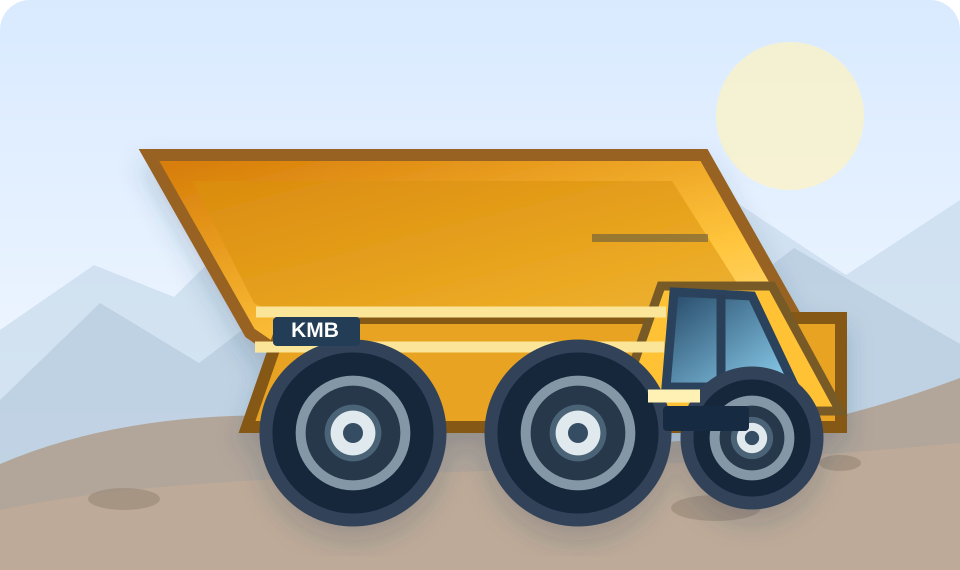
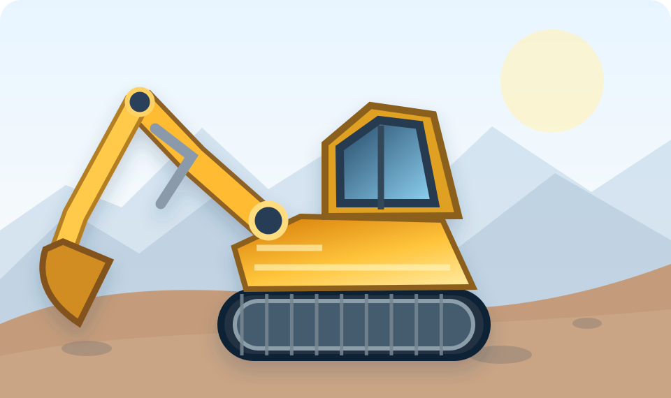
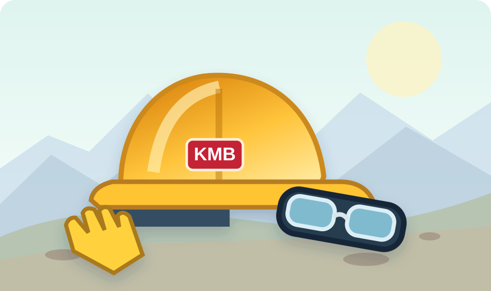
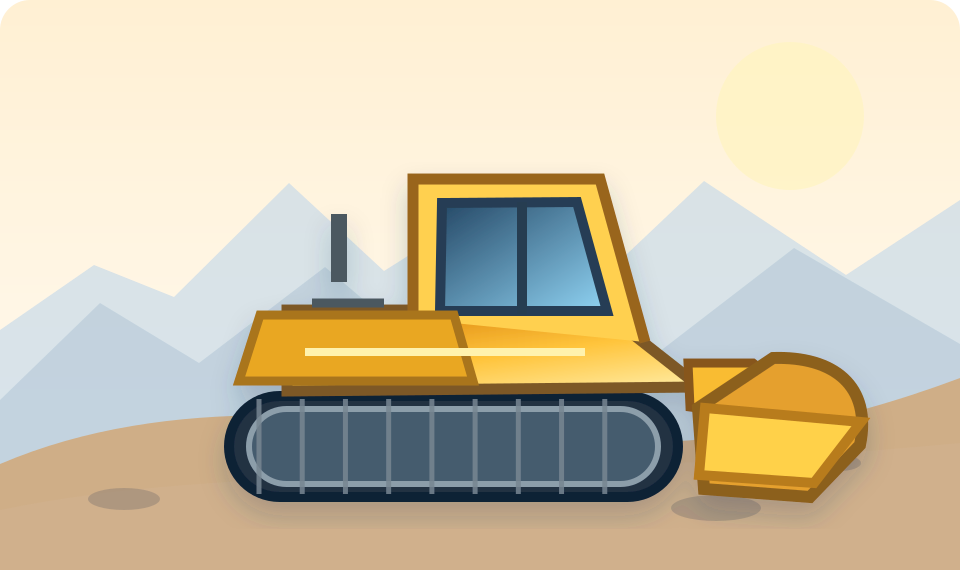
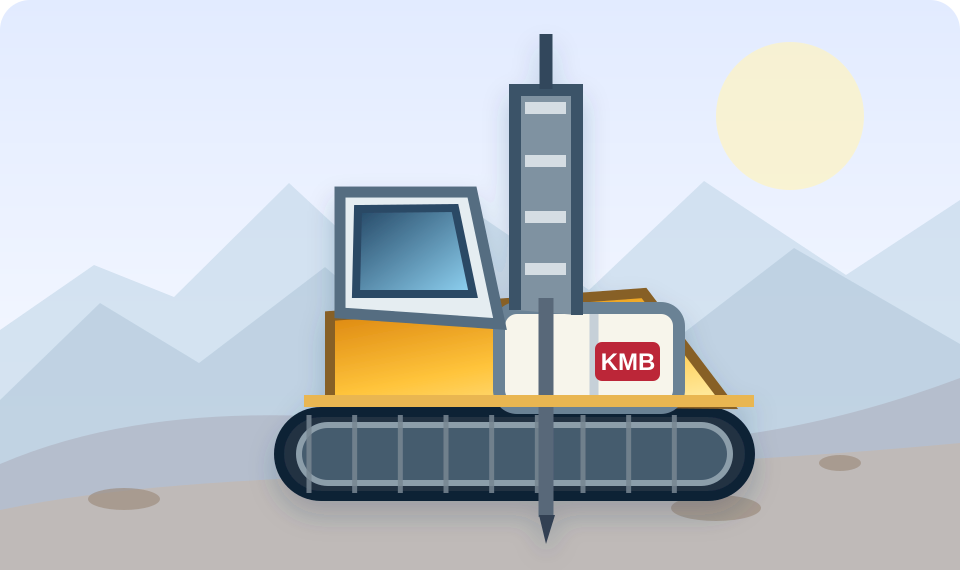

PEOPLE · EQUIPMENT · PRODUCTIVITY · SAFETY
Integrated Monitoring System
Satu portal untuk seluruh monitoring operasional PT Karunia Mandiri Berkarya.
Data Terintegrasi
Operasional Efisien
Mendukung Keputusan

Petunjuk akses Pemilik / EditorMasuk menggunakan akun KMB yang terdaftar. Ketuk untuk melihat panduan akses.
Buka monitoring pilihan, lalu pilih Masuk untuk Edit atau Masuk. Gunakan email akun KMB yang sudah terdaftar beserta password. Status Pelihat sebelum login adalah normal. Demi keamanan, jangan bagikan password kepada siapa pun. Hak akses Pemilik, Editor, dan Pelihat tetap diatur di masing-masing monitoring.
PORTAL MONITORING
Pilih Monitoring System
Akses cepat ke seluruh sistem monitoring operasional KMB.
MANPOWER

Monitoring KTA–TRA
Manpower planning, actual, vacant, dan progres rekrutmen.
Masuk MonitoringMANPOWER
Monitoring KMB
Monitoring manpower gabungan seluruh jobsite KMB.
Masuk MonitoringSAFETY

Monitoring APD
Monitoring penggunaan APD, stok gudang, dan riwayat.
Masuk MonitoringMANPOWER

Monitoring BUPR Ampah
Planning, actual, vacant, dan pemenuhan manpower project BUPR Ampah.
Masuk MonitoringMANPOWER

Monitoring MBJ
Manpower planning, kebutuhan posisi, dan rekrutmen project MBJ.
Masuk Monitoring